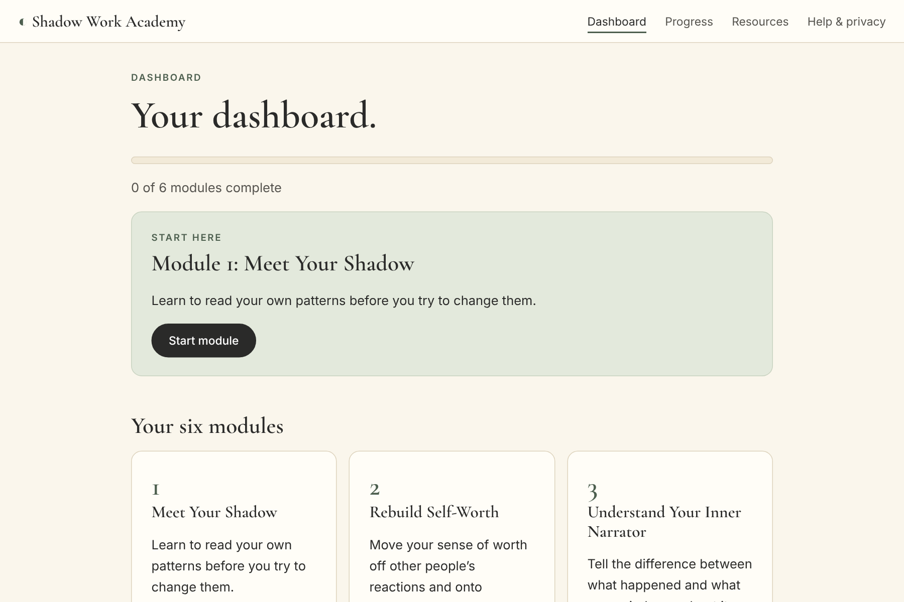
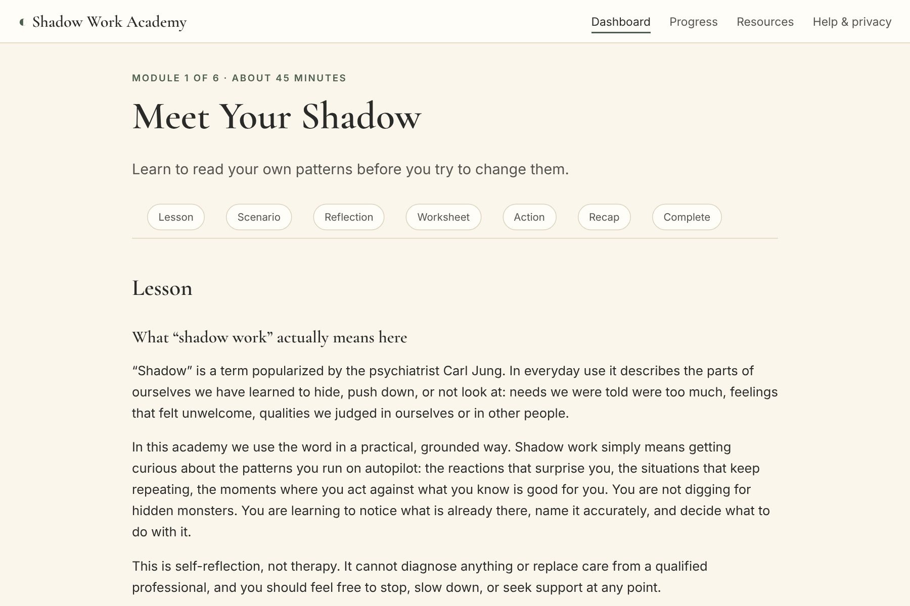
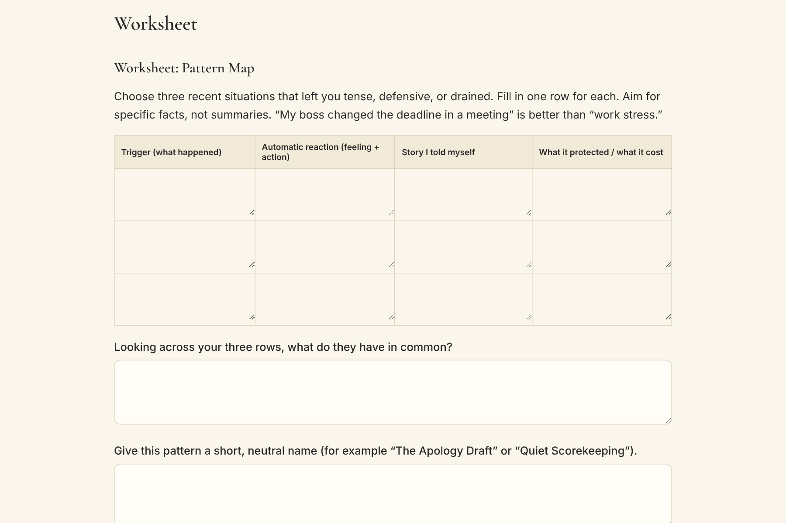
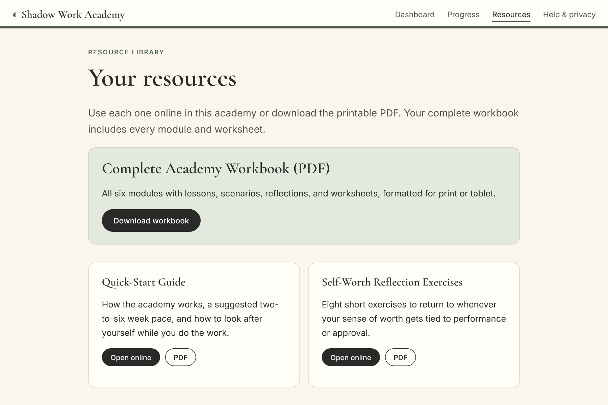
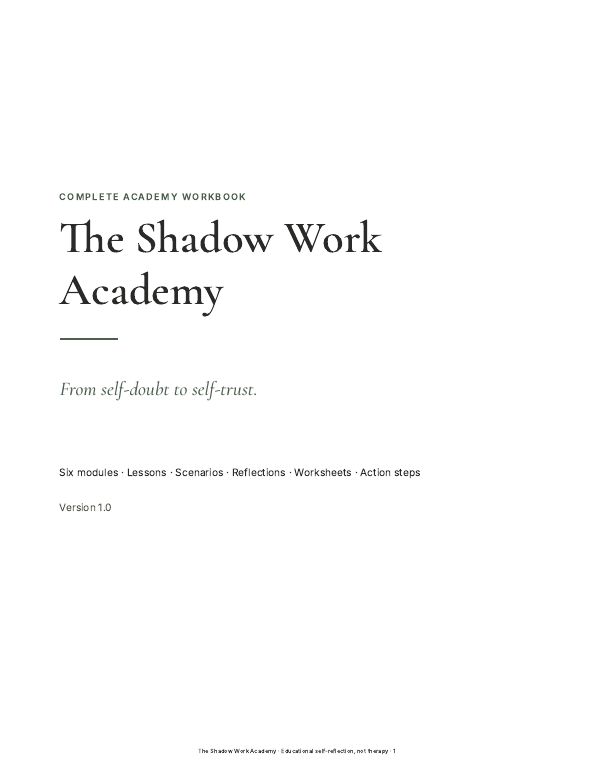
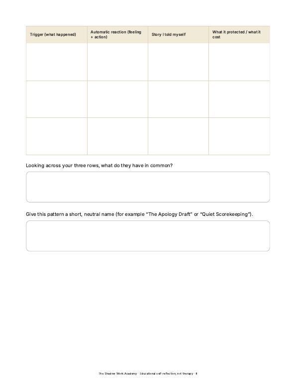
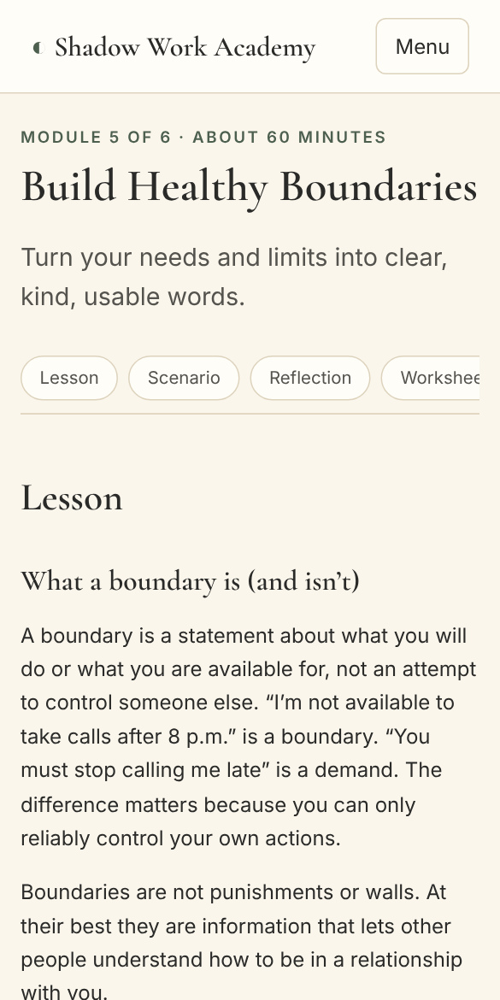

1
Meet Your Shadow
Understand shadow work and your recurring emotional patterns.
- Triggers and automatic reactions
- The four parts of a pattern
- Pattern-mapping exercise
A self-paced shadow work program
The Shadow Work Academy is a six-module program of lessons, guided reflection, worksheets, and real-world practice for people who say yes too fast, criticize themselves too hard, and need other people’s approval to feel okay.
Secure checkout through Gumroad. Refund terms on the refund policy page. Educational self-reflection, not therapy.

Who it’s for
This is for adults who struggle with people-pleasing, self-criticism, overthinking, seeking external validation, and setting boundaries, and who want more than a list of journal prompts. You may recognize some of this:
Why it’s different
Lists of shadow work prompts are easy to find. What’s harder is knowing what to do with the answers. The Academy connects each step to the next.
| A typical shadow work journal | The Shadow Work Academy | |
|---|---|---|
| Structure | Loose list of prompts | Six modules in a deliberate order, each building on the last |
| Teaching | Little or none | Written lessons that explain the idea before asking you to apply it |
| Examples | Rarely | A realistic scenario in every module so you can see the skill in use |
| Practice | Reflection only | One real-world action step per module, with space to record what happened |
| Words you can use | Not included | 16 boundary scripts for work, family, friendships and relationships |
| Keeping it going | Ends when the book ends | Weekly tracker and a self-trust action plan to continue |
The curriculum
Every module includes a lesson, a practical example, guided reflection questions, a worksheet, one real-world action step, a recap, and a place to record your completion and key insight.
Understand shadow work and your recurring emotional patterns.
Move from conditional worth to a steadier foundation.
Separate harsh self-talk from observable facts.
See the fear behind automatic yes.
Turn needs and limits into clear words.
Build a plan you can actually keep.
See what you get
These are captures of the Academy and workbook exactly as customers receive them. The fields are empty because your reflections are yours.






What’s included
Formats: interactive Academy (HTML, opens in your browser, works offline) and PDF. We chose these because they work on any device without special software and keep your reflections on your own device.
How it works
Buy once, receive one ZIP file by email, unzip it, and open the Academy in your browser.
Read the lesson and scenario, then answer the guided questions in your own words.
Complete the worksheet and try one real-world action step during the week.
Mark the module complete, note your insight, and use the weekly tracker to keep going.
Pricing
Founding price
One-time payment in USD · no subscription
Secure checkout by Gumroad. Taxes may be added at checkout depending on your location. See the refund policy.
From Rewired Mind
The Shadow Work Academy is made by Rewired Mind, which creates practical digital products on confidence, overthinking, anxiety management, and self-improvement. The approach is the same here: specific problems, clear frameworks, and small actions you can actually take.
Rewired Mind provides educational content, not clinical services.
Questions
No. The Shadow Work Academy is an educational, self-guided reflection program. It is not therapy, counseling, or medical advice, and it cannot diagnose or treat any condition. If you are struggling, a licensed mental health professional is the right place for support, and many people use programs like this alongside professional care.
A downloadable package containing the interactive Academy (six modules you open in your web browser), the 60+ page printable Complete Academy Workbook (PDF), and nine supporting resources in PDF form: quick-start guide, self-worth exercises, trigger and pattern tracker, inner-critic worksheet, people-pleasing audit, boundary scripts library, values and needs worksheet, weekly reflection tracker, and self-trust action plan.
After purchase you receive a download link by email from our checkout provider. You download one ZIP file, unzip it, and open the Academy file in your browser. A short start guide is included. There is no account to create and no login.
In the interactive Academy, what you type is saved in your own browser on your own device. The Academy pages do not contain analytics or code that sends your answers anywhere. Because the data lives in one browser, you can download a backup file from inside the Academy. If you clear your browser data, unsaved answers can be lost. The workbook PDF works fully offline on paper or a tablet.
Each module takes roughly 45 to 60 minutes for the lesson and worksheet, plus a week to practice the action step. Most people go one module per week, so about six weeks, but you set the pace and keep access to the files.
It is for adults who recognize patterns like people-pleasing, harsh self-criticism, overthinking, and difficulty setting boundaries and who want a structured way to reflect and practice. It is not designed for crisis situations, trauma processing, or mental health treatment. If you are in danger or thinking of harming yourself, contact local emergency services or a crisis line.
No. Module 1 explains the idea in plain language. You do not need any background in psychology.
We cannot promise specific results, because outcomes depend on what you do with the material and on your circumstances. What we can say is what the program contains: structured lessons, reflection, worksheets, and real-world practice steps. The free Module 1 sample lets you try the format before you buy.
See the refund policy page for the full terms. In short: if the Academy is not right for you, contact support within 30 days of purchase and we will refund you.
Any modern browser on a phone, tablet, or computer (Chrome, Safari, Firefox, Edge). The PDFs open on any device and print on standard Letter or A4 paper.
No. It is a one-time purchase. There are no recurring charges.
Read the first module exactly as customers receive it. If it feels useful, the full Academy is $197.
Educational self-reflection, not therapy. See the educational disclaimer.